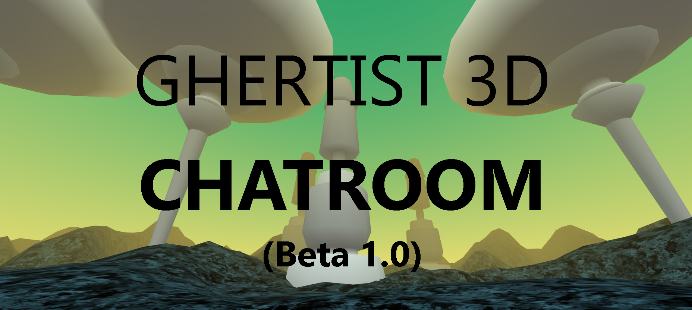

Ghertist 3D Chatroom
Experimental 3D / VR Chatroom experience supporting audio chat
Chat and talk to others in several 3D enviroments running in browser or Mobile
What is a Ghertist?
Essentially an elaborate Joke...
Chat Rooms
Citadel
General Chat - For conversations about anything
Mushroom Fields
Deep chat - Talk about anything 'deep' here - science, art, philosophy etc
Powered by:
Built with A-Frame, Networked A-Frame and A-Frame Enviroment component by Chris Godber 2020